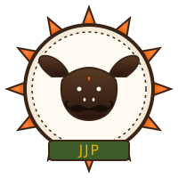

Free ghee for every household
One kilo of pure desi ghee per family, per month. Inflation? Not our problem — call your jiju.

Jaat Janta Party जाट जनता पार्टीजाट जनता पार्टी — मूँछ है तो सोच है
A political front of the youth, by the youth, for the youth — Secular, Socialist, Democratic, and Stubborn.
The Jaat Janta Party (JJP) is a strictly satirical political movement born out of one simple truth: every Choudhary thinks he should be running the country, so we decided to make it official.
Inspired by the spirit of the Cockroach Janta Party, the JJP is louder, hungrier, and at least 30% more stubborn. We demand reform, reservation for buffaloes, and that nobody touch our dahi again.
⚠️ Parody disclaimer: This is a satirical website. We are not contesting elections. We are contesting the queue at the dhaba.
Ten promises. Stamped, sealed, and shouted from the rooftops of Rohtak.
One kilo of pure desi ghee per family, per month. Inflation? Not our problem — call your jiju.
Mandatory wrestling pit in every panchayat. Disputes settled in mitti, not court.
Constitutional protection for facial hair. Any law banning mooch is hereby declared kachra.
Connectivity in the khet. Reels in the field. Insta live from the tractor.
Dedicated ministry. Health insurance. Spa days. Murrah breed gets reserved parking.
Replaces coffee at all government meetings. Salted by default. Sweet on request, with judgment.
If you can't serve kadhi-chawal and at least four sweets, postpone the function.
Because dadi already runs the house. Let's just make it official.
Equivalent to IIT. Better, actually. The dangal is the dissertation.
Top speed 40 km/h. Right of way over BMWs. Honking at a tractor is now a fineable offence.
* All promises are guaranteed*.
*Guarantee not legally binding. Tractor mileage may vary. Ghee subject to availability of cows in a good mood.
You qualify for the JJP if you meet at least three out of five:
Or is actively trying to grow one. Stubble counts during exam season.
Salted or sweet, no judgement. Mango lassi is for tourists.
Even once. Even by accident. Even if it was your cousin's wedding.
Or knows someone in the village who definitely can. We trust you.
WhatsApp university PhD welcome. Khap-level debate skill preferred.
Refreshes every time a Choudhary shouts "bhai".
Every party needs a face. We have five and they all look the same in sunglasses.
Supreme Leader (self-declared)
Has never lost an argument. Owns 7 buffaloes. Believes "Twitter" is a small bird.
Spokesperson & Chief Strategist
Holds veto over all decisions. The only person Choudhary saab is afraid of.
Treasurer (allegedly)
Doesn't really live with us. Knows a guy who knows a guy in Delhi.
Internal Affairs & Security
Won a state-level dangal in 2014. Hasn't lost a fight since. Or an argument.
Social Media Cell (one phone, no plan)
The only one who knows Canva. Runs the reels. Demands he be made minister of IT.
Headlines our PR cell wishes were true
Diplomatic standoff continues. Negotiations to resume after panchayat.
The murrah, named Lakshmi, demands a cabinet berth or nothing at all.
Spoiler: it already has one, you just haven't met them at the wedding yet.
The boy is unstoppable now. Pray for his mother's data pack.
Fill the form below. We will not call you. We will not email you. We will, however, expect you to show up at the next panchayat with a plate of jalebi.
No. JJP is a parody. We are not contesting elections, we are contesting whose turn it is on the charpai.
No affiliation. No endorsement. No funding (we wish). Just satire and self-aware desi humour.
Spiritually, yes. Officially, no. We borrowed their energy and added ghee.
What data? You filled a fake form on a parody site. The only thing being sold here is the joke.
Yes. That is the most Jaat thing you could do. Welcome to the family.